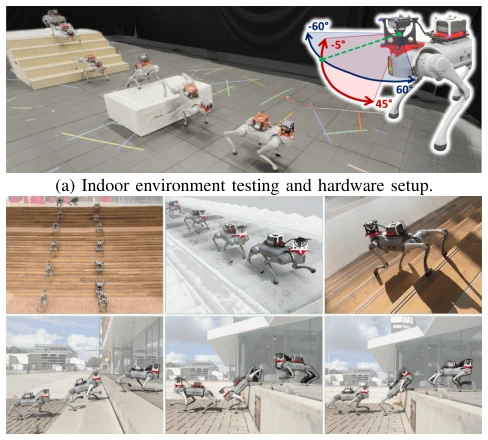
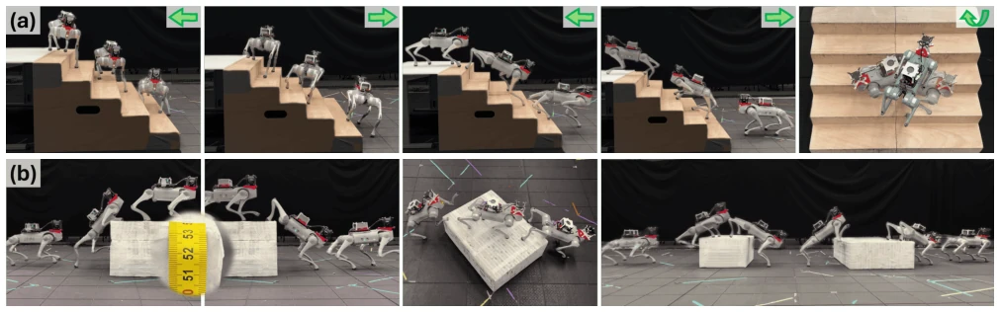
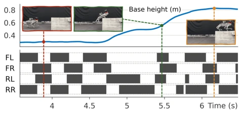
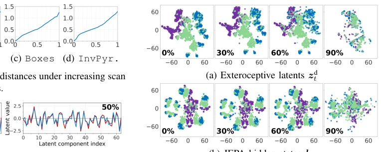
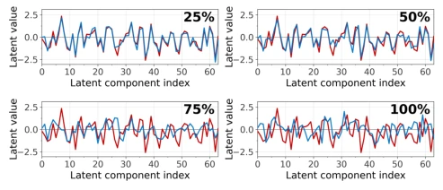

JEPLO: Joint-Embedding Predictive Learning for LiDAR-Based Legged Locomotion
Qihao Yuan, Yixuan Qiu, Ziyu Cao, Ming Cao, Kailai Li abspdf
论文点评Review
这篇论文给 LiDAR 爱好者和 SLAM 厌恶者都送了一份大礼。JEPLO 用 JEPA 架构搞定了腿足机器人的感知运动，不用显式建图，直接预测潜空间。虽然“无映射”听起来很性感，但本质上还是靠累积点云投影，并非完全无记忆，这点得诚实点。不过，在遮挡和噪声下确实比 PIE 和 WMP 稳多了。Sim-to-Real 跑得挺顺，Jetson 上也能跑，就是不知道户外大风天会不会飘。总之，是个把 JEPA 从图像领域硬塞进机器人运动控制的有趣尝试，虽然没解决所有 LiDAR 稀疏性问题，但胜在简单粗暴有效，值得给个好评。对于不想维护复杂 SLAM 系统的团队，这方案简直是救命稻草，尽管它可能只是把复杂度从后端移到了前端网络里，但能跑就是硬道理。
—
研究动机Motivation
现有腿足运动主要靠 RGB-D，但光照一差就瞎 [4]。LiDAR 虽然抗光，但扫描不规则，传统方法得靠 SLAM 建图 [2][3]，计算重还容易崩。JEPA 不用重建像素，直接预测潜状态，适合这种噪声大的场景。作者想解决的就是“不用 SLAM 也能在复杂地形跑”的问题，特别是 LiDAR 特有的稀疏和遮挡。现有方法如 PIE [5] 和 WMP [6] 依赖重建，容易过拟合噪声。JEPLO 试图通过隐式预测绕过这些坑，让机器人更鲁棒。这动机很实在，毕竟谁也不想让机器人在黑暗里因为一个点云缺失就摔跟头。而且显式映射对计算资源要求高，不适合轻量化部署。
—

Fig. 1: JEPLO enables mapping-free LiDAR-based percep- tive locomotion onboard quadruped robots across diverse scenarios. Terrain height variations are 18 cm to 44 cm.
仿真用 MuJoCo，真实用 Unitree Go2 + Livox Mid-360。对比 PIE [5] 和 WMP [6]。指标是成功率。遮挡测试显示 JEPLO 最稳，尤其是高箱子和台阶。真实世界能爬 53cm 箱子，7.5 米楼梯。Latent 分析显示遮挡下特征没散架。在 80% 遮挡下依然能跑，这比基线强太多。计算量也低，Jetson 上 CPU 占用 12%。数据集也开源了，方便大家复现。总的来说，实验设计挺扎实，不仅看成功率，还看了 latent 的鲁棒性，没光看数字。Sim-to-Real 验证了方法的有效性，证明了无需 SLAM 也能实现复杂地形穿越。
—
其他图片Other Figures

Fig. 7: Locomotion across diverse terrains. (a) Omnidirectional stair traversal and in-place rotation on stairs with a 15 cm rise and 25 cm run. (b) Traversal of boxes up to 53 cm high, including angled approaches and consecutive climbs.

Fig. 8: Gait analysis for climbing a 53 cm-high box.

Fig. 15: t-SNE latent visualization under masks for Steps (purple), Rough (blue), and Stairs (green).

Fig. 14: Latent representations from unoccluded (red) and 25%-100% masked (blue) scans in Steps.